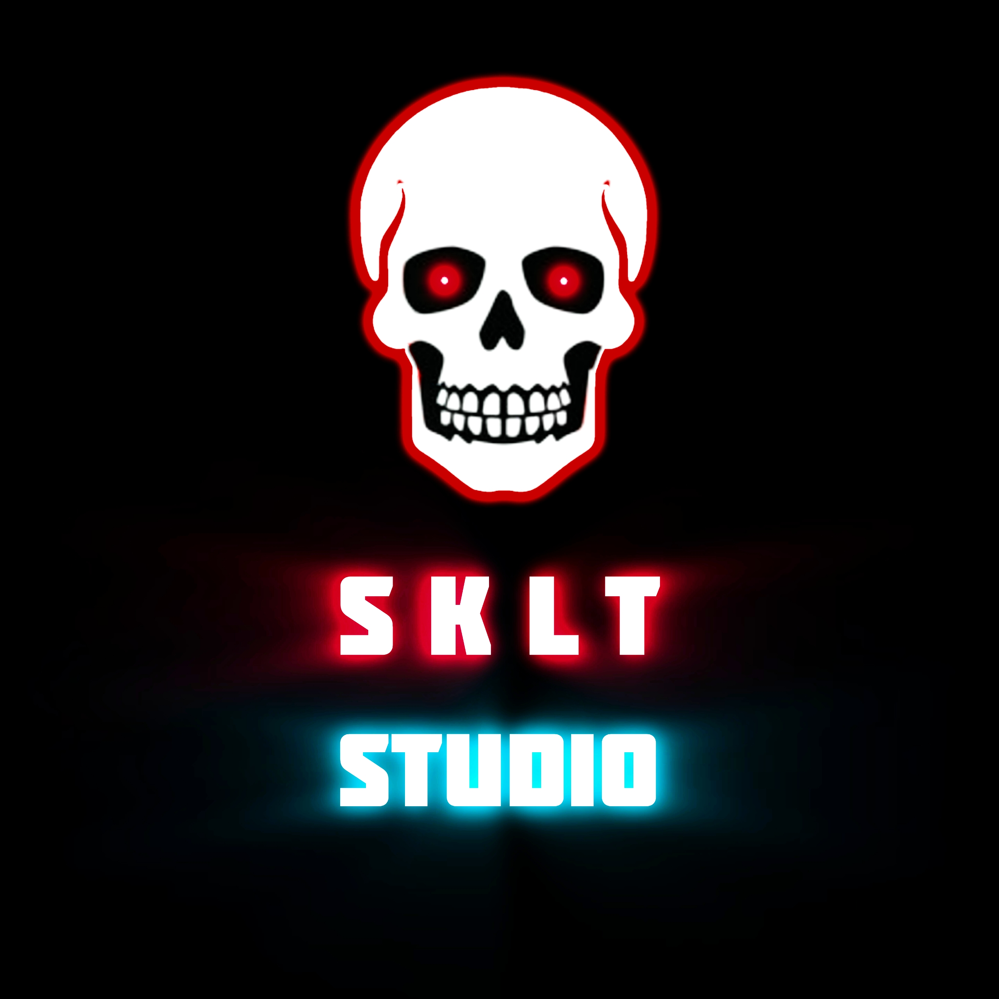

Из гаража — в инди
SKLT Studio родилась в тесном гараже, где по ночам при свете ламп создавались первые хоррор-прототипы. Что началось как эксперимент энтузиаста, постепенно перерастает в независимую студию, которая не боится экспериментировать с жанрами, атмосферой и безумными идеями. Мы до сих пор стараемся хранить дух того самого гаража, чтобы игры были ламповыми и атмосферными.
Наши цифры
Лучшие проекты
Five Nights at Freddy's 3 Remake
Ремастер культового хоррора. Управляйте камерами и выживайте в обновлённой атмосфере ужаса.
Страница на Itch.io →The Curse Of Tryton
Вы попытались устроиться в корпорацию Tryton INC, но что-то пошло не так, а вокруг ни души. Исследуйте полузаброшенный завод и раскройте все тайны этого места.
Страница на Itch.io →Markot's Nightmare
Злой Cheter украл весь запас травы Маркота. Верните украденное в безумном приключении. Активно ведётся разработка сюжетного дополнения!
Страница на Itch.io →